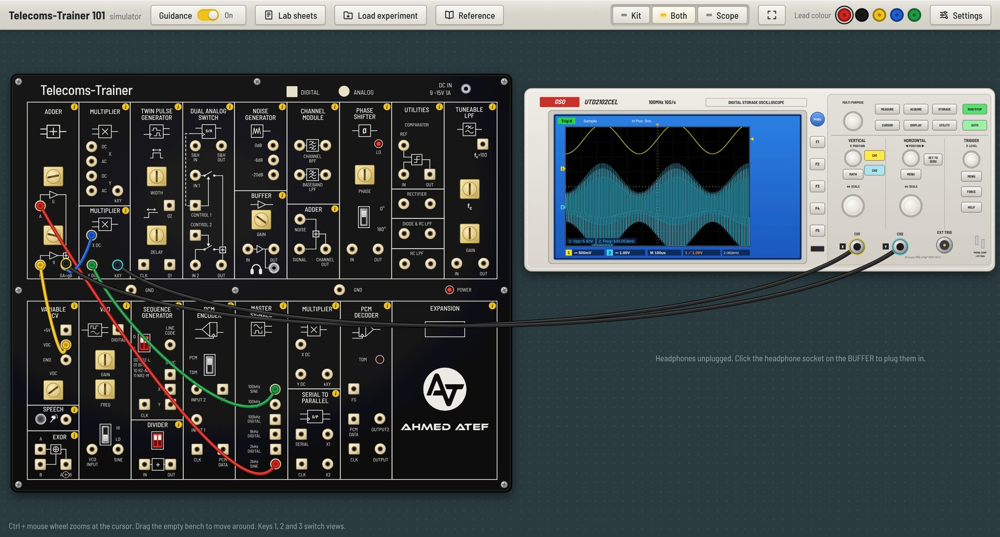

معمل الاتصالات على جهازكThe telecoms lab on your computer
محاكي لكيت Emona ETT-101 وأوسيلوسكوب UTD2102CEL. وصّل الأسلاك، لف المقابض، وشوف الإشارة على الشاشة زي المعمل بالظبط، ومعاه كل تجارب الترم الأول والتاني جاهزة.
A simulator of the Emona ETT-101 trainer and the UTD2102CEL oscilloscope. Plug in leads, turn the knobs and watch the signals on the screen as in the lab, with every Term 1 and Term 2 experiment ready to load.
تحميلDownload
التثبيتInstalling
Windows
- افتح ملف الـ Setup اللي نزل.
- لو ظهرت رسالة زرقاء “Windows protected your PC”: دوس More info وبعدين Run anyway. ده عادي لأن البرنامج مش موقّع بشهادة مدفوعة.
- كمّل التثبيت، وهتلاقي البرنامج على سطح المكتب.
- Open the Setup file you downloaded.
- If a blue “Windows protected your PC” box appears, click More info, then Run anyway. It shows because the app isn’t signed with a paid certificate.
- Finish the installer; the app is on your desktop.
Mac
- افتح ملف الـ dmg واسحب البرنامج لفولدر Applications.
- أول مرة بس: افتح البرنامج، ولو قالك إنه من مطوّر مش معروف، افتح System Settings وبعدين Privacy & Security ودوس Open Anyway.
- بعد كده بيفتح عادي.
- Open the dmg file and drag the app into Applications.
- First time only: open the app; if macOS says the developer can’t be verified, go to System Settings → Privacy & Security and click Open Anyway.
- After that it opens normally.
التحديثات: على Windows البرنامج بيحدّث نفسه لوحده لما تنزل نسخة جديدة. على Mac بيقولك إن فيه نسخة جديدة وبيفتحلك الصفحة دي تنزّلها.
Updates: on Windows the app updates itself when a new version is out. On Mac it tells you and opens this page so you can download it.
